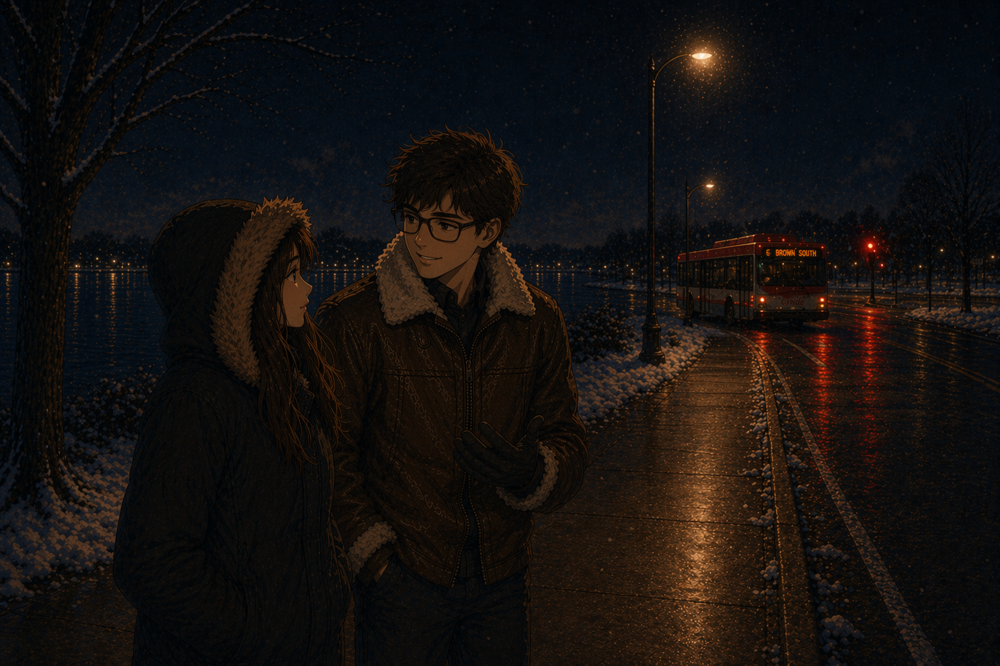

The beginning
January 26, 2026
Bus Stop in the Snow
This was the first time I met you, and I still remember thinking you were really cute. It felt like such a random conversation on such a casual day, and I never would have guessed that someone I met so simply would end up meaning this much to me. At the time, it just felt like a small moment. But looking back now, it was the beginning of something really special.
first memory